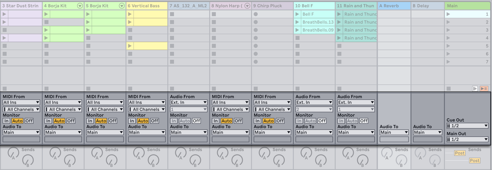
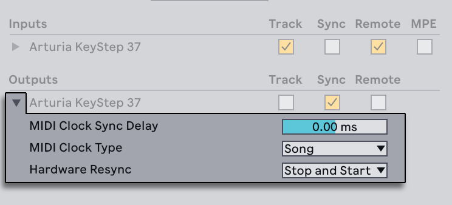
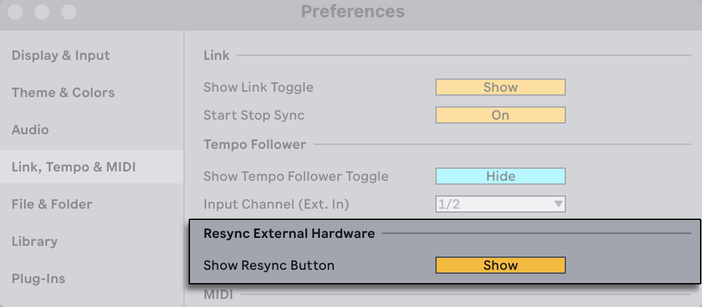
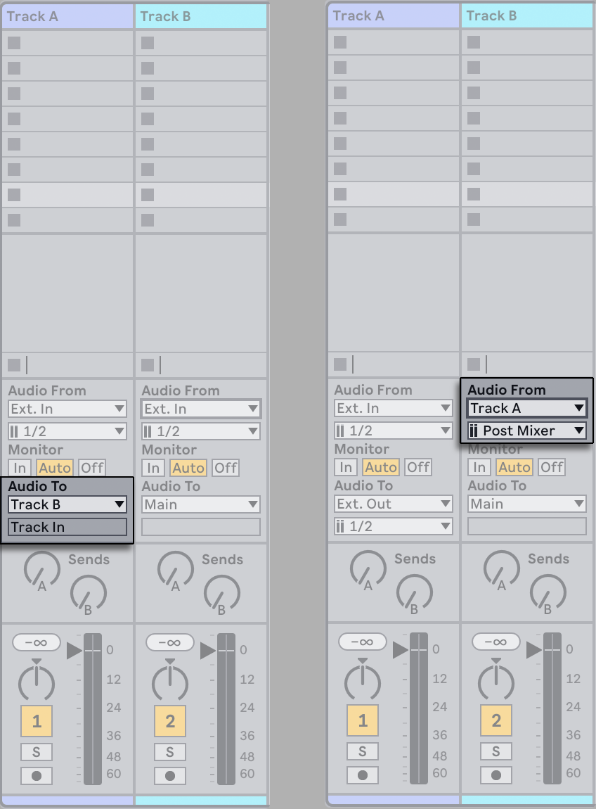
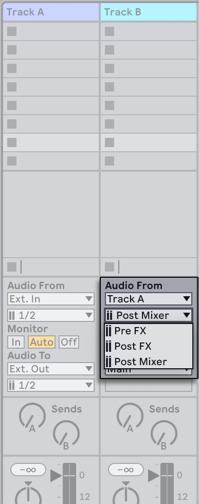
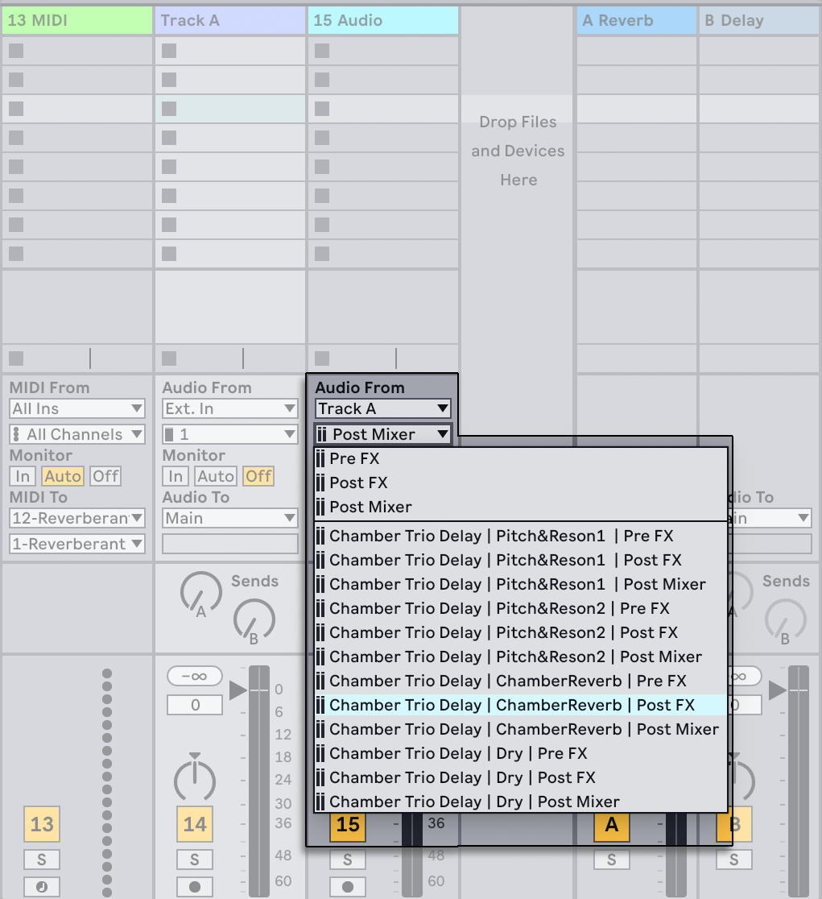
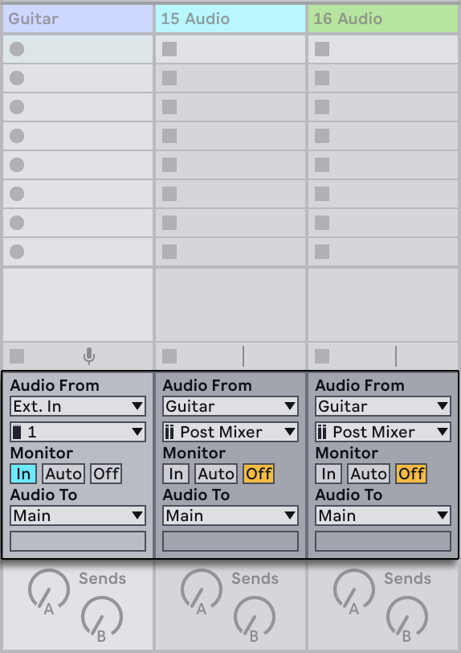
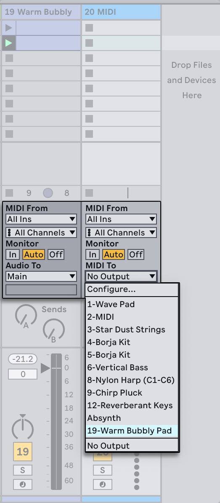
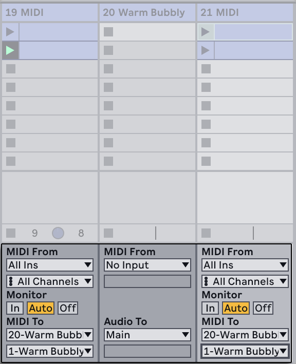
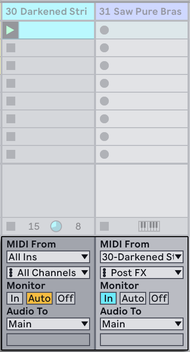

17. Routing and I/O
In the context of Live, “routing“ is the setup of the tracks’ signal sources and destinations (i.e., their inputs and outputs). Most routing happens in the mixer’s track In/Out section, which offers, for every track, choosers to select a signal source and destination. The mixer’s In/Out section is Live’s “patchbay.“

You can show or hide the I/O section of the mixer in either Session or Arrangement View using the In/Out entry in the mixer’s view control menu in the bottom right corner of Live’s window, or via the View menu’s In/Out option in the Mixer Controls submenu, or using the shortcut CtrlAltI (Win) / CtrlOptionI (Mac).

For every track that can play clips, the In/Out section has the same layout:
- The upper chooser pair (“Audio/MIDI From“) selects the track’s input. Audio tracks have an audio input, and MIDI tracks have a MIDI input. Return tracks receive their input from the respective sends.
- The Monitor radio button selects the monitor mode: the conditions under which the track’s input is heard through the track.
- The lower chooser pair (“Audio/MIDI To“) selects the track’s output. All tracks have audio outputs, except for MIDI tracks without instruments. Remember that instruments convert MIDI to audio.
Within a chooser pair, the upper chooser selects the signal category (“Ext.,“ for instance, for external connections via an audio or MIDI interface), and is called the Input/Output Type chooser. If this signal type offers sub-selections or channels, they are available from the lower chooser, or the Input/Output Channel chooser. In our “Ext.“ example, these would be the individual audio/MIDI inputs and outputs.
17.1 Monitoring
“Monitoring,“ in the context of Live, means passing a track’s input signal on to the track’s output. Suppose you have set up an audio track to receive its input signal from a guitar. Monitoring then means that the signal from your live guitar playing actually reaches the track’s output, via the track’s device chain. If the track’s output is set to “Main,“ you can hear the guitar signal, processed by whatever effects are used (and delayed by whatever latency the audio hardware interface incurs), over your speakers.
The In/Out section offers, for every audio track and MIDI track, a Monitor radio button with the following three options:
The default Auto-monitoring setting does the right thing for most straightforward recording applications: Monitoring is on when the track is armed, but monitoring is inhibited as long as the track is playing clips.
To permanently monitor the track’s input, regardless of whether the track is armed or clips are playing, choose In. This setting effectively turns the track into what is called an “Aux“ on some systems: the track is not used for recording but for bringing in a signal from elsewhere. With this setting, output from the clips is suppressed. An “In“ monitoring setting can be easily recognized even when the In/Out section is hidden by the blue color of the track’s Activator switch.
Monitoring can be turned off altogether by choosing the Off option. This is useful when recording acoustic instruments which are monitored “through the air,“ when using an external mixing console for monitoring or when using an audio hardware interface with a “direct monitoring“ option that bypasses the computer so as to avoid latency. Generally, it is preferable to work with an audio interface that allows for negligible latencies (a few milliseconds). If you are recording into Live with monitoring set to “Off,“ you may want to make the Audio Settings’ Overall Latency adjustment, which is described in the built-in program tutorial on setting up the Audio Settings.
When monitoring is set to “In” or “Auto,” the “Keep Monitoring Latency in Recorded Audio” option will be enabled by default. This adjusts the timing of the recording to match what is heard through Live’s monitoring. Generally speaking it is recommended to leave this option enabled when recording software instruments or effects, and to switch it off when recording acoustic instruments or relying on external monitoring. You can right-click on the “In” or “Auto” monitor buttons to manually switch “Keep Monitoring Latency in Record Audio” on or off.
If multiple tracks are selected, pressing one of the Monitor buttons applies this selection to all of the selected tracks.
The Monitor buttons can also be restored to their default state. When the In/Out section is expanded, you can press the Delete key to reset the Monitor buttons to the default (“Off” for audio tracks and “Auto” for MIDI tracks), or you can select the Edit menu option “Return to Default.”
17.2 External Audio In/Out
An audio interface’s inputs are selected by choosing “Ext. In“ from the Input Type chooser of an audio track. The Input Channel chooser then offers the individual input channels. Entries in this chooser each have meters next to their names to help you identify signal presence and overload (when the meter flashes red). Setting up the audio interface’s outputs works the same way via the output chooser pair. If multiple tracks are selected, any changes you make to these choosers will be applied to all selected tracks.
The list of available inputs and outputs depends on the Audio Settings, which can be reached via the Input and Output Channel choosers’ “Configure…“ option. Note that the Audio Settings also provide access to the Channel Configuration dialogs, which determine which inputs and outputs are used, and whether they are available to Live as mono or stereo pairs. Essentially, the Channel Configuration dialog tells Live what it needs to know about how the computer is connected to the other audio components in your studio.
You can rename any input and output channels that appear in the Channel Configuration dialogs. If changed, the new name(s) will be displayed in the corresponding Input / Output Channel chooser drop-down. You can rename channels more quickly by using the Tab key to move between them. Note that changed names are always associated with their respective audio device.
17.2.1 Mono/Stereo Conversions
When a mono signal is chosen as an audio track’s input, the track will record mono samples; otherwise it will record stereo samples. Signals in the track’s device chain are always stereo, even when the track’s input is mono or when the track plays mono samples.
Mono is turned into stereo simply by using the identical signal for left and right channels. When a track is routed into a mono output, the left and right signals are added together and attenuated by 6 dB to avoid clipping.
17.3 External MIDI In/Out
MIDI from the outside world is routed into Live just like audio. From the Input Type chooser of a MIDI track, you can either select a specific MIDI input port or “All Ins,“ which is the merged input of all external MIDI ports. The Input Channel chooser offers the individual input channels of the selected MIDI port and the merged signal of all channels, “All Channels.“ As is the case with audio inputs, the Input Channel chooser also has meters next to every entry to represent activity on the respective input channel. If multiple MIDI tracks are selected, any changes you make to these choosers will be applied to all selected tracks.
17.3.1 MIDI Port Inputs and Outputs
You can configure which MIDI ports are made available to Live using the Inputs and Outputs options in the MIDI section of the Link, Tempo & MIDI Settings. All available input and output ports are listed here. You can use any number of MIDI ports for track input and output; the mixer’s In/Out choosers allow them to be addressed individually.

17.3.1.1 Track
Enabling Track allows Live to send or receive note and CC (Control Change) messages, for example, when using a MIDI keyboard to play or enter pitches.
Activate Track for a MIDI port’s input when: - Playing instruments in Live with a MIDI keyboard. - Recording notes into MIDI clips. - Recording MIDI CC messages into MIDI clips, for example to capture parameter changes from an external hardware synthesizer.
Activate Track for a MIDI port’s output when: - Triggering an external hardware device (like a synthesizer, drum machine, etc). - Sending MIDI notes to another application (using a virtual MIDI bus). - Sending MIDI CC automation to an external device or application.
Note: You only need to activate Track on the output port for a MIDI controller if it has a built-in sound generator.
17.3.1.2 Sync
Sync allows Live to send or receive MIDI Clock, or receive MIDI Timecode. Note: Unless it has a built-in sequencer or arpeggiator, you won’t ever need to activate Sync on the input or output ports of a MIDI controller.
Activate Sync for a MIDI port’s input when: - Synchronizing Live to an external sequencer, drum machine or groove box. - Synchronizing Live to another DAW using MIDI.
Activate Sync for a MIDI port’s output when: - Synchronizing an external sequencer, drum machine or groove box to Live using MIDI Clock. - Synchronizing another DAW to Live using MIDI Clock. - Synchronizing the LFO and arpeggiator of an external synthesizer or MIDI controller to Live.
When Sync is enabled for a port’s output, you can access a set of additional options by pressing the triangle next to the port’s name.

You can adjust the MIDI Clock Sync Delay amount to add a delay to outgoing MIDI sync signals in milliseconds. This can help correct any timing issues that occur between Live and the external hardware.
MIDI Clock Type can be set to either Song to Pattern. In Song Mode, Live will send out MIDI Song Position Pointer (SPP) and Continue messages each time the play position changes. In Pattern Mode, Live will only use Start messages, sent out at the start of the following bar. Use Pattern Mode if your MIDI device does not recognize SPP messages.
The Hardware Resync drop-down lets you choose how a resync message is sent when the Resync External Hardware option is enabled.

When enabled, the Resync External Hardware button appears in Live’s Control bar, and can be used to send resync messages out to external gear. This is useful when synced hardware drifts out of time with the Live Set during playback.

The default behavior is Stop and Start, which sends a resync message consisting of a MIDI Clock Stop event followed by a MIDI Clock Start event; this works best with most MIDI devices. If set to Start Only, just the MIDI Clock Start event resync message is sent; this might work better for some devices. If set to Don’t Resync, no resync messages are sent.
17.3.1.3 Remote
The Remote switch allows you to create mappings from a MIDI controller to parameters in Live or to send feedback to a MIDI controller.
Activate Remote for a MIDI port’s input when: - Creating custom MIDI mappings to be able to control parameters in Live. - Using a MIDI keyboard to trigger MIDI Clips.
Activate Remote for a MIDI port’s output when: - Using MIDI controllers with LEDs that reflect the status of mapped Live parameters. - Using MIDI controllers with motorized faders that reflect the status of mapped Live parameters.
17.3.2 Playing MIDI With the Computer Keyboard
The computer keyboard can be used for generating MIDI notes from computer keyboard strokes. To turn the computer MIDI keyboard on, activate the Control Bar’s Computer MIDI Keyboard button, or enable the “Computer MIDI Keyboard” entry in the Options menu, or use the M shortcut.

The center row of letter keys on the keyboard will play notes corresponding to the white keys on a piano, beginning on the left with the note C3. The black keys on a piano correspond to the upper row of computer keys. The four leftmost letters on the lower row of the keyboard (Z,X,C, and V on a U.S.-English keyboard) are used to transpose the note range and to set velocity, as follows:
- The leftmost keys (Z and X) adjust the keyboard’s octave range.
- The next two keys (C and V) adjust incoming note velocity by intervals of twenty (20, 40, 60, and so on).
When the computer keyboard is set to send notes between C3 and C4, the keys are mapped to MIDI notes in such a way that the center row of the keyboard (ASDF…), corresponds to the Impulse percussion sampler’s sample slots. This means that you can play and record drum patterns directly from the computer keyboard.
Note that when the computer MIDI keyboard is activated, it will “steal“ keys that may have otherwise been assigned to remote-control elements of the Live interface. To prevent this, you can turn the computer MIDI keyboard off when it is not needed. Additionally, shortcuts that use single letters, such as S for soloing tracks, can be accessed when the Computer MIDI Keyboard is enabled by adding Shift, e.g., ShiftS.
17.3.3 Connecting External Synthesizers
Routing MIDI to an external synthesizer is straightforward: The Output Type chooser is set to whatever MIDI port the synthesizer is connected to; the Output Channel chooser is used to select which MIDI channel to send on.
In addition to routing via a track’s In/Out section, it is also possible to route from within a track’s device chain by using the External Instrument device. In this case, you can send MIDI out to the external synthesizer and return its audio — all within a single track.
Important: If you are using a keyboard synthesizer both as a keyboard to play into Live and as a sound generator, then please make sure to check the synthesizer’s “Local Off“ function. Every synthesizer has this function, which effectively separates the keyboard from the sound generator, allowing you to treat both components as if they were separate devices. This allows you to use Live as the hub of your MIDI studio, which receives MIDI from the keyboard and dispatches the incoming MIDI, as well as the MIDI from the clips, as appropriate.
17.3.4 MIDI In/Out Indicators
Live’s Control Bar contains three pairs of indicator LEDs that tell you about incoming and outgoing MIDI. These indicators tell you not only about the presence of signals, but also about their use. In every pair, the upper indicator flashes when a MIDI message is received, and the lower indicator flashes when a MIDI message is sent.

The three indicator pairs represent, from left to right:
- MIDI Clock and Timecode signals that are used for synchronizing Live with other sequencers. Note that this set of indicators is only visible when an external sync source has been enabled for a MIDI port in the Link, Tempo & MIDI Settings;
- MIDI messages that are used for remote-controlling Live’s user-interface elements;
- MIDI messages coming from and going to Live’s MIDI tracks.
MIDI messages that are mapped to remote-control Live’s user-interface elements are “eaten up“ by the remote control assignment and will not be passed on to the MIDI tracks. This is a common cause of confusion that can be easily resolved by looking at the indicators.
17.4 Resampling
Live’s Main output can be routed into an individual audio track and recorded, or resampled. Resampling can be a fun and useful tool, as it lets you create samples from what is currently happening in a Live Set that can then be immediately integrated. It can be used to record tracks that include processor-intensive devices, so as to delete the devices, or for quickly previewing before rendering to disk.
The “Resampling“ option in any audio track’s Input Type chooser will route the Main output to that track. You can then decide on what exactly you will be resampling and mute, solo or otherwise adjust the tracks that are feeding the Main output. You will probably want to use the Main Volume meter to make sure that your level is as high as possible without clipping (indicated by red in the meter). Then you can arm the track and record into any of its empty clip slots. Note that the recording track’s own output will be suppressed while resampling is taking place, and will not be included in the recording.
Samples created by resampling will be stored in with the current Set’s Project folder, under Samples/Recorded. Until the Set is saved, they remain at the location specified by the Temporary Folder.
17.5 Internal Routings
Live’s mixer and external routing devices allow for inter-track routings. These routings, albeit potentially confusing, enable many valuable creative and technical options. Via the mixer, inter-track routing can work two ways:
- Track A is set up to send its output signal to Track B. This is possible because every track that can receive an output signal of the appropriate type from Track A shows up in its Output Type chooser.
- Track B is set up to receive its input signal from Track A. This works because every track that delivers a signal of the appropriate type appears in Track B’s Input Type chooser.

Both approaches result in Track A’s output being fed into Track B. Approach 1 leaves Track B’s in/out settings alone, and we can, at any time, add more tracks that feed their output into Track B. This is the method of choice for “many-to-one“ routings such as submixes or several MIDI tracks playing the same instrument. In this scenario, soloing Track B will still allow you to hear the output of the tracks that are feeding it. Also, you can still solo Track A and hear its output signal. In this case, all other tracks are muted, including those that might also feed into Track B. Technically, what you hear is the output of Track B, with everything except Track A’s signal removed.
Approach 2, on the other hand, leaves Track A unaffected except for Track B tapping its output. We can easily add more tracks like Track B that all tap Track A’s output. Instrument layering is a good example of such a “one-to-many“ routing setup.
17.5.1 Internal Routing Points
Signals travel from Live’s tracks into their respective device chains and then into the track mixer, where they might become panned or have their levels altered by the tracks’ faders.
Whenever a track’s Audio From input chooser is set to another track (as described in the previous section’s Approach 2), the signal received can be tapped from one of three different points chosen from the Input Channel chooser: Pre FX, Post FX or Post Mixer.

- Pre FX taps the signal that is coming directly from a track, before it has been passed on to the track’s device chains (FX) or mixer. Therefore, changes that are made to the tapped track’s devices or mixer have no effect on the tapped signal. Soloing a track that taps another track Pre FX will allow you to hear the tapped track.
- Post FX taps the signal at the output of a track’s device chains (FX), but before it has been passed back to the track mixer. Changes to the tapped track’s devices will therefore alter the tapped signal, but changes to its mixer settings will not. Soloing a track that taps another track Post FX will allow you to hear the tapped track.
- Post Mixer taps the final output of a track, after it has passed through its device chains and mixer. Soloing a track that taps another track Post Mixer will not allow you to hear the tapped track.
17.5.1.1 Routing Points in Racks

If a track has one or more Instrument or Effect Racks in its device chain, internal routing points (Pre FX, Post FX and Post Mixer) will also be available for every chain within the Rack. If a track contains one or more Drum Racks, internal routing points will be available for any of the Rack’s return chains. Each Rack will also be listed in the Input Channel chooser:
- (Rack Name) | (Chain Name) | Pre FX — The signal will be tapped from the point that it enters the Rack, before it reaches the chain’s devices.
- (Rack Name) | (Chain Name) | Post FX — The signal will be tapped from the end of the chain, but before it passes to the chain’s mixer.
- (Rack Name) | (Chain Name) | Post Mixer — The signal will be tapped from the output of the chain’s mixer, just before the point where all of the chains in the Rack are summed together to create the Rack’s output.
Soloing a track that taps a Chain at any of these points will still allow you to hear the output at that point.
17.5.2 Making Use of Internal Routing
This section presents several internal routing examples in more detail.
17.5.2.1 Post-Effects Recording
Let’s say that you are feeding a guitar into Live, building up a song track by track, overlaying take onto take. It is certainly powerful to have a separate effects chain per track for applying different effects to different takes — after the fact. You might, however, want to run the guitar signal through effects (a noise gate or an amp model, for instance) before the recording stage, and record the post-effects signal.

This is easily accomplished by devoting a special audio track for processing and monitoring the incoming guitar signal. We call this track “Guitar“ and drag the desired effects into its device chain. We do not record directly into the Guitar track; instead we create a couple more tracks to use for recording. Those tracks are all set up to receive their input Post FX from the Guitar track. Note that we could also tap the Guitar track Post Mixer if we wished to record any level or panning from it.
As for monitoring, we set the Guitar track’s Monitor radio button to In, because we always want to listen to our guitar through this track, no matter what else is going on in Live. The other tracks’ Monitor radio buttons are set to Off.
17.5.2.2 Recording MIDI as Audio
When working with MIDI and complex software instruments, it is sometimes more useful to record the resulting audio than the incoming MIDI. A single MIDI note can prompt, for example, Native Instruments’ Absynth to produce something that sounds more like a piece of music than a single tone. This output lends itself more to representation as an audio waveform than a single note in a MIDI clip, particularly when comparing the editing options.

A setup similar to the one described above accomplishes the task. We have one MIDI track hosting the virtual instrument, and we use an additional audio track to record the audio result as the instrument is played.
17.5.2.3 Creating Submixes

Suppose we have the individual drums of a drum kit coming in on separate tracks for multitrack recording. In the mix, we can easily change the volumes of the individual drums, but adjusting the volume of the entire drum kit against the rest of the music is less convenient. Therefore, we add a new audio track to submix the drums. The individual drum tracks are all set to output to the submix track, which outputs to the Main track. The submix track gives us a handy volume control for the entire drum kit.
Alternatively, you could combine the separate drum tracks into a Group Track for even more flexibility. This automatically creates the necessary output routings and also allows you to hide or show the component tracks.

A third possibility is to use Live’s return tracks for submixing. This is done by selecting the Sends Only option in a track’s Output Type, then turning up a Send control as desired. The corresponding return track will then act as a submixer channel.
17.5.2.4 Several MIDI Tracks Playing the Same Instrument
Consider a MIDI track containing a virtual instrument — a Simpler playing a pad sound, for example. We have already recorded MIDI clips into this track when we realize that we would like to add an independent, parallel take for the same instrument. So we add another MIDI track. We could now drag another Simpler into the new track, but we would really like to reuse the Simpler from the pad track, so that changing the pad’s sound affects the notes from both tracks.

This is accomplished by setting the new MIDI track’s Output Type chooser to the pad track. Note that the Output Channel chooser now offers a selection of destinations: We can either feed the new track’s output into the input of the pad track, or we can directly address the Simpler. The “Track In“ option in the Output Channel represents the pad track’s input signal (the signal to be recorded), which is not what we want. We instead select “Warm Bubbly Pad“ to send the new track’s MIDI directly to the Simpler, bypassing the recording and monitoring stage. With this setup, we can choose to record new takes on either track and they will all play the same pad sound.

We might be bothered by the fact that muting the pad track (by turning off its Activator switch) also mutes the other MIDI track. To be precise, the other track keeps playing, but its MIDI is played by an instrument that is out of the mix. This can be easily remedied by cutting the clips from the pad track and pasting them into a third track that can be independently muted (and that can hold its own MIDI effects). The original pad track now acts as a mere instrument container. As we are not recording new clips into this track, we can set its Input Type chooser to “No Input,“ which makes its Arm button disappear and helps to avoid confusion when the mixer’s In/Out section is hidden.
17.5.2.5 Tapping Individual Outs From an Instrument
Some software instruments, like Live’s Impulse percussion sampler, offer multiple audio outputs for the signals they produce. By default, Impulse mixes the output of its eight sample slots internally and delivers the mix at the instrument’s audio out. Any audio effects following Impulse in the same track process the composite signal. Sometimes it is desirable to take an individual drum sound out of the mix for individual effects processing and mixing. This is possible because Impulse offers its sample slots as audio sources to other tracks.

We simply create an audio track and select from its Input Type chooser the track with the Impulse. The Input Channel chooser now offers, in addition to Pre FX, Post FX and Post Mixer, Impulse’s eight individual outputs, labeled according to the sample used in each slot. Notice that routing an individual output from Impulse into another track automatically takes this signal out of Impulse’s own internal mix. This convenience is not standard behavior of most plug-in instruments, however. Soloing a track that taps one of Impulse’s sample slots will still allow you to hear the output of that slot.
17.5.2.6 Using Multi-Timbral Plug-In Instruments
Many plug-in instruments support multi-timbral operation. A multi-timbral instrument is like several instruments in one, with each component “part“ (or whatever term the manufacturer uses) receiving MIDI on a separate MIDI channel. Usually, the multi-timbral instrument offers individual outputs so that the parts can be separately routed into the mixer. Or, the instrument might offer a submixer of its own.

Sending MIDI from the mixer to a multi-timbral instrument is a variation of a case described above. One MIDI track hosts the multi-timbral instrument, and additional MIDI tracks are used to feed its individual parts. Each additional MIDI track has its Output Type chooser pointed to the track that contains the instrument, and its Output Channel chooser referencing the target MIDI channel. Additional audio tracks can then be used to tap the instrument’s individual outputs, as described earlier.
It is also possible to use the External Instrument device to route MIDI to (and audio from) the secondary outputs on multi-timbral plug-ins. This scenario eliminates the need to create an additional audio track for each tapped output:
- Insert the multi-timbral instrument on a MIDI track.
- Insert an External Instrument device on another MIDI track.
- Select the track that contains the instrument in the first MIDI To chooser on the External Instrument device.
- Select the MIDI channel to route to in the second chooser on the External Instrument device.
- From the External Instrument’s Audio From chooser, select a secondary output on the instrument to which you are sending MIDI.
Repeat steps 2-5 to feed and tap additional components of your multi-timbral instrument. You could also put the entire system of External Instrument devices into a single track, by placing each one in a Rack’s device chain.
Note that the main outputs of the multi-timbral instrument will still output to the track that contains the instrument — only auxiliary outputs are available to the External Instrument device.
17.5.2.7 Feeding Sidechain Inputs
Some effects have so-called “sidechain inputs.“ A vocoder, for instance, imposes spectral characteristics taken from one signal (say, spoken word) onto another signal, for instance a string pad. The vocoder is inserted as an audio effect into the string track. It has a sidechain input for the speech signal, which has to be delivered from another track. So, we create an additional audio track named “Speech“ and set its Output Type chooser to the “Strings“ track. From the Output Channel chooser, we select the vocoder’s sidechain input.
Some vocoder plug-ins include a built-in synthesizer to generate the “carrier“ signal. In this case, the only difference from the above procedure is that the vocoder instrument is dragged into a MIDI track. Feeding the sidechain audio input works as described above.
A number of Live’s built-in devices have their own sidechain controls with integrated routing choosers that match those found in tracks. Thus when using these devices, it is not necessary to follow the above procedure — you can simply select the sidechain source from within the device itself.
17.5.2.8 Layering Instruments
Suppose that we have a MIDI track containing an instrument playing a string sound, which we would like to augment by adding a brass sound playing the same notes. This can be easily done by adding a MIDI track that contains an instrument playing the brass sound and setting its Input Type chooser to tap the string track’s Post FX signal.

Perhaps you wonder why this works, given that the string track’s output is audio and not MIDI. When routing MIDI in from another track, we are tapping the MIDI at the latest possible stage, which is after any MIDI Effects, and just before the instrument.